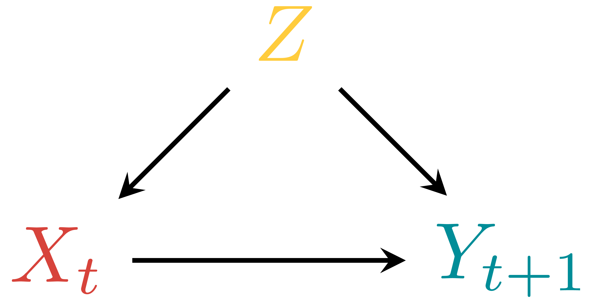
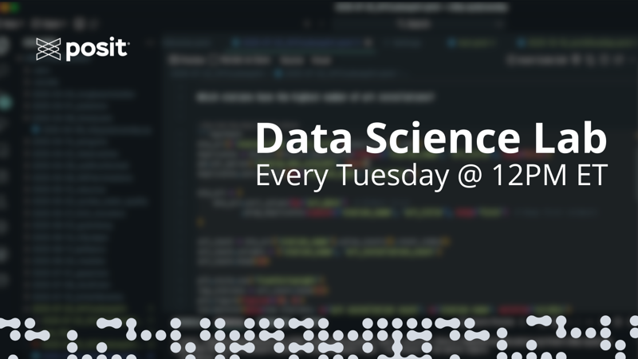
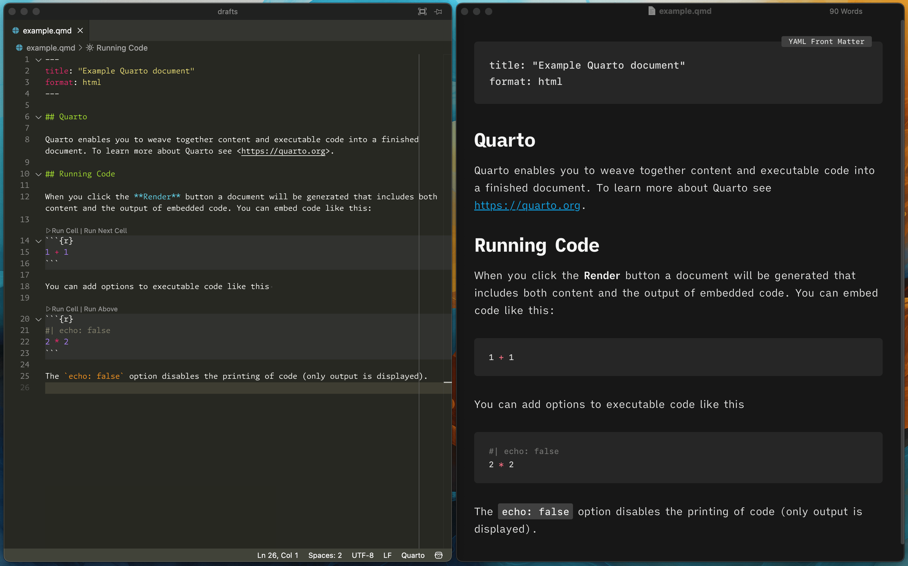

2026
How to automatically convert TikZ images to SVG with Quarto
quarto
tikz
Make Quarto convert TikZ graphics to SVG files when rendering to non-LaTeX outputs like HTML, Word, and Typst


How to make your data analysis life easier using Positron, Raycast, and Espanso
positron
automation
writing
data science
databases
duckdb
automator
Links and resources from my time on Posit's Data Science Lab in January 2026

No matching items
2025
Open files in external programs with Positron or Visual Studio Code
positron
writing
data science
Positron is great for code, but macOS has better programs specifically for writing with Markdown. Quickly open a Quarto file in an external program with tasks.

No matching items